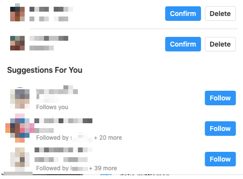

During this first task, the user talked out their thought process as they went about it. First, the user found my profile and from there noticed the line in the bio that says "Followed by:" and proceeded to list followers that we had in common. The website gives you the option to click on the number part of that line (in this case, "71 more") and a window pops up that allows you to scroll through a complete list of mutual followers. To find the actual number however, the only metric that is given is the "71". The user had to add the three names proceeding it to get the actual total (74).
After searching for the profile of the legendary Queen Bey, the user proceeded to look through the comments for the one with the most likes. I will admit, I hadn't realized the Beyonce had blessed our feeds within the last thirty minutes with a new post, so comments were still rolling in. After about two minutes of browsing, the user settled on the first comment they say as having the most the likes, and therefore the most popular.
This one was pretty simple. The user navigated to their profile page and scrolled to their posts. Posts are by default sorted by most recent at the top and oldest at the bottom. The only the user could see the number of likes without clicking on the post was by hover over it. Hovering over a post displays the number of likes and the number of comments, as shown in the screenshot below. There was no way to actually organize the posts, however. They can only be sorted by date.
Same story as with Task 3. Some other observations made here, however, were that the post with the most number of comments was NOT the the same as the post with the most number of likes, which surprised the user. It was also realized that you can also only view another profile by most recent.
This wasn't the hardest task for the user, but it was the most interesting. When told the task, the user indicated that they believed going to their "Discover" page would be the best option. When we arrived on that page we saw this:
This was sufficient. The user, however, believed that there was another way to see this as well and relied on their experience using the Instagram app on on their phone. With this came the realization that clicking on the notifications/likes icon can also lead a user to their suggested followers. The user in this test has a private account so by clicking on their follower requests, they were able to see their list of suggested followers, as in the screenshot below. I would be interested in seeing how this would differ on a public account.
